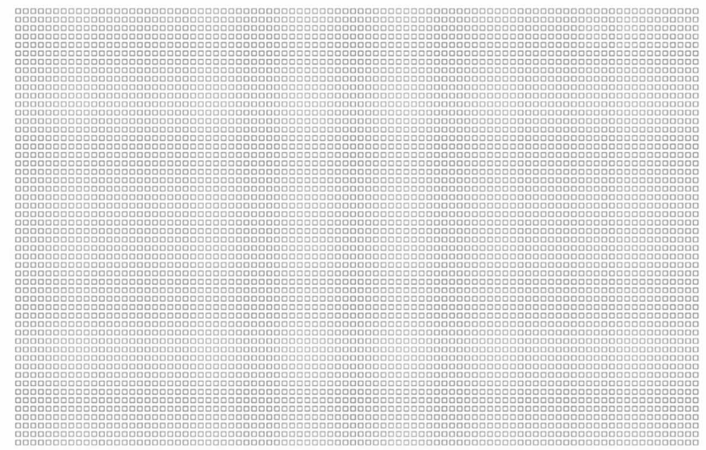

2016年06月01日
演讲者觉得自己是个拖延症挺严重的人，他觉得，如果把我们的脑海比喻成一艘船。然后都有一个理性决策人(Rational Decision-Maker)，区别在于有拖延症的人脑海里有一个及时行乐的猴子(Instant Gratification Monkey)，只注重简单和快乐。每当遇到一个有期限的事情。理性决策人想先做工作的时候，猴子跳出来说不如我们先看个综艺节目吧！然后就夺走了方向盘。
其实理性决策人在某些时候和及时行乐的猴子的目的是一致的，也是合理的。但有些时候，从长远来看，一些困难不开心的事情才更有意义。所以有了冲突，可冲突的结果往往是一直及时行乐的猴子把拖延症患者带进了黑暗操场(The Dark Playground)，在这里只有玩。
也因为有截止日期，在临近期限时。理性决策人的守护天使——惊慌怪兽(The Panic Monster)就醒过来了，而它恰恰也是及时行乐猴最怕的。所以一切都回到了理性决策人的控制上。在有期限的事情上，一切都可控制的，后期惊慌怪兽会醒过来。
而在其他没有截止日期的事情上呢？例如创业？锻炼身体？看望家人？维系感情？所以如果想依靠惊慌怪兽，因为没有截止日期，也唤醒不了它。这种长时期的拖延更容易被忽视，常常在无声无息中折磨着人，也可以说是大部分长期抑郁和悔恨的根源。让人觉得自己是生活的旁观者。
也正因为这样，演讲者认为非拖延者是不存在的，只是有些人跟截止日期保持着良好的关系。但是猴子最狡猾的伎俩发生在没有截止日期的事情上。所以他引入了一个概念——生命日历(Life Calendar)，假如一个人有90年的寿命，一个星期用一个格子来表示，特别在我们已经度过了很多个格子的时候显得格子更少了。

或许这些格子就是我们最大的期限，我们要时刻警惕及时行乐的猴子，能帮我们克服许多没有截止期限的拖延症。
思考
拖延的原因各种各样，大部分是没有意识到我们想要做的事情和我们剩下的时间，而人生的尽头或许就是最大的期限。要在终点不后悔，不遗憾。就要现在开始行动啦，或许？再等等，先看个节目先，反正很快就做啦。
视频链接
http://open.163.com/movie/2016/3/Q/E/MBHQSM52F_MBI15O7QE.html